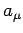
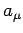

Inhalt Index DeskTop Bronstein

 Lineare Algebra Lineare Gleichungssysteme Lösung linearer Gleichungssysteme Definition und Lösbarkeit
Lineare Algebra Lineare Gleichungssysteme Lösung linearer Gleichungssysteme Definition und Lösbarkeit


Ein System von m linearen Gleichungen mit n Unbekannten 
heißt ein lineares Gleichungssystem. Dabei bedeuten:
| (4.107b) |
Je nachdem, ob der Spaltenvektor  verschwindet (), oder nicht (), spricht man von einem homogenen bzw. inhomogenen Gleichungssystem.
verschwindet (), oder nicht (), spricht man von einem homogenen bzw. inhomogenen Gleichungssystem.
Die Elemente  der sogenannten Koeffizientenmatrix
der sogenannten Koeffizientenmatrix  sind die Koeffizienten des Systems, während die Komponenten  des Spaltenvektors
sind die Koeffizienten des Systems, während die Komponenten  des Spaltenvektors  seine Absolutglieder sind.
seine Absolutglieder sind.